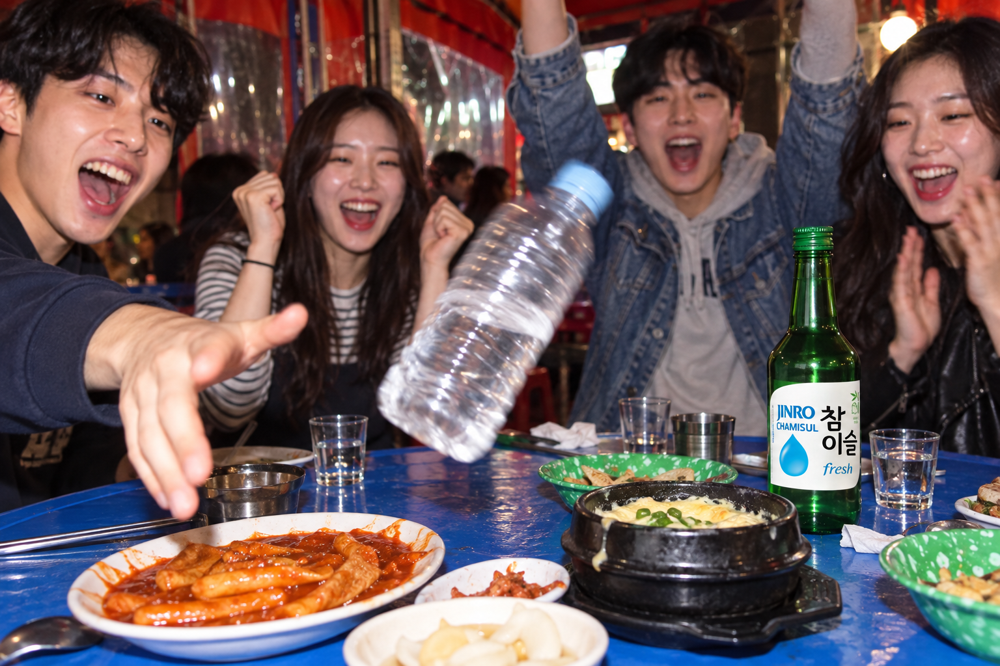
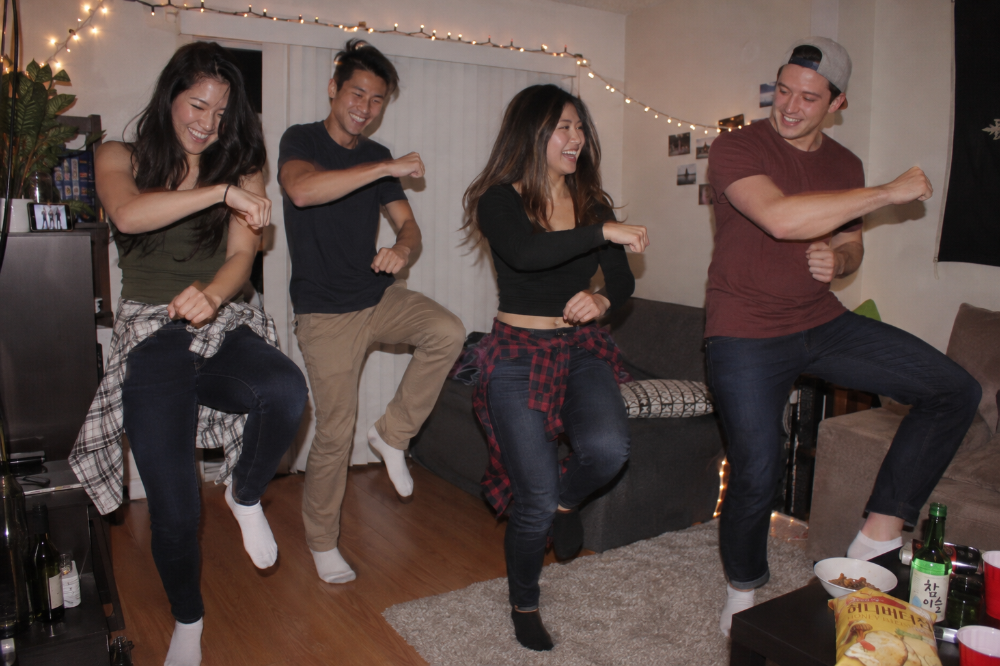

Bring Back 2016：那些我們都記得的爆紅挑戰與迷因
2026 就是新的 2016。從人體模特兒挑戰到瓶子翻轉挑戰，一起回顧那些值得和朋友再玩一次的 2016 爆紅時刻。
狗狗耳朵濾鏡、花圈頭飾、每場派對都在玩的人體模特兒挑戰（Mannequin Challenge）。如果今年你的動態被一張張懷舊照片洗版，那你一定已經知道：2026 就是新的 2016。
這股風潮今年稍早從 TikTok 開始延燒，許多人翻出 2016 年的舊照片，配上「we’re back」之類的文字，很快就擴散到 Instagram。十年後，那一年的歌曲、濾鏡和派對時刻，又重新回到我們的動態上。
2016 之所以好玩，很大一部分來自那些傳遍每間學校、每間辦公室和每個群組聊天室的挑戰與迷因。以下整理五個值得再玩一次的經典，以及和朋友一起輕鬆重現的方法。

1. 人體模特兒挑戰：所有人，定格！
規則很簡單。房間裡的每個人都在動作進行到一半時定格，就像商店裡的假人模特兒，再由一個人走過整個場景拍攝。大多數影片都會配上 Rae Sremmurd 的〈Black Beatles〉。
這個挑戰在 2016 年秋天由一群高中生開始，短短幾週內，運動隊伍、辦公室，甚至電視節目都紛紛推出自己的版本。
想重現的話，就在下次聚餐時挑一個最熱鬧的瞬間。有人正在大笑、有人伸手夾烤肉、有人正在自拍。接著按下錄影，慢慢繞著餐桌走一圈。

2. 瓶子翻轉挑戰：一次拋出，完美落地
把裝了一部分水的塑膠水瓶往上拋，讓它在空中翻轉後直直立在桌上。挑戰就只有這樣，卻讓大家玩了好幾個月。
2016 年春天，一名高中生在才藝表演上成功立起水瓶後，這股風潮便迅速爆紅，很快就從教室一路延燒到運動賽事的直播畫面。
訣竅是只裝大約三分之一的水。記得只用塑膠水瓶，每個人有三次機會。

3. Running Man 挑戰：人人都會跳的舞步
Running Man 挑戰搭配 Ghost Town DJ’s 的〈My Boo〉，是一個看起來像在原地跑步的簡單舞步。
在大學籃球員上傳自己的版本後迅速擴散，不同運動項目的隊伍也很快跟著加入。
如果你們當年沒學會，很可能朋友中至少有一個人還記得舞步。就讓那位朋友帶大家跳吧。

4. PPAP：讓所有人洗腦的一首歌
〈Pen-Pineapple-Apple-Pen〉是由日本搞笑藝人飾演的角色 Pikotaro 所唱的一首短歌，旋律超級洗腦。影片長度不到一分鐘，卻在 2016 年秋天紅遍全世界。
想重現的話，只需要一支筆、一顆蘋果和一顆鳳梨，或是餐桌上任何可以拿來代替的東西。
5. Pokémon GO：大家都走到戶外的那個夏天
2016 年夏天，公園和街道上擠滿了盯著手機、努力抓寶可夢的人。陌生人在同一個地點聊了起來，深夜散步也變成了一群人的活動。
這款遊戲現在依然有人在玩。聚餐前和朋友約一段短短的散步，看看誰沿路抓到最多。
和 JINRO 一起 Bring Back 2016
想辦一場 2016 之夜嗎？放一份那一年的歌單，找回舊的照片濾鏡，再挑一個挑戰當作開場。
如果想在餐桌上加入 JINRO，可以挑選適合你們的口味。JINRO Chamisul Fresh 口感清爽俐落，JINRO Grapefruit、Peach 與 Strawberry 等水果口味則帶來不同的果香。冰涼享用更美味。各地區供應情況可能有所不同。
照片或許看起來像 2016，但和朋友分享的這一刻，就在現在。
想看更多 JINRO 的故事，歡迎追蹤 JINRO Global 官方 Instagram、Facebook 和 YouTube。
本文僅供已達法定飲酒年齡的讀者閱讀。請理性、適量享用 JINRO，切勿酒後駕車。